Filtering, Smoothing and Denoising
In this tutorial, we show how to filter/smooth 1D and 2D spectra and gives information on the algorithms used in Spectrochempy.
We first import spectrochempy, the other libraries used in this tutorial, and a sample raman dataset:
[1]:
import spectrochempy as scp
from spectrochempy import info_
![](data:image/png;base64,iVBORw0KGgoAAAANSUhEUgAAABgAAAAYCAYAAADgdz34AAAAAXNSR0IArs4c6QAAAAlw
SFlzAAAJOgAACToB8GSSSgAAAetpVFh0WE1MOmNvbS5hZG9iZS54bXAAAAAAADx4OnhtcG1ldGEgeG1sbnM6eD0iYWRvYmU6bnM6
bWV0YS8iIHg6eG1wdGs9IlhNUCBDb3JlIDUuNC4wIj4KICAgPHJkZjpSREYgeG1sbnM6cmRmPSJodHRwOi8vd3d3LnczLm9yZy8x
OTk5LzAyLzIyLXJkZi1zeW50YXgtbnMjIj4KICAgICAgPHJkZjpEZXNjcmlwdGlvbiByZGY6YWJvdXQ9IiIKICAgICAgICAgICAg
eG1sbnM6eG1wPSJodHRwOi8vbnMuYWRvYmUuY29tL3hhcC8xLjAvIgogICAgICAgICAgICB4bWxuczp0aWZmPSJodHRwOi8vbnMu
YWRvYmUuY29tL3RpZmYvMS4wLyI+CiAgICAgICAgIDx4bXA6Q3JlYXRvclRvb2w+bWF0cGxvdGxpYiB2ZXJzaW9uIDIuMS4wLCBo
dHRwOi8vbWF0cGxvdGxpYi5vcmcvPC94bXA6Q3JlYXRvclRvb2w+CiAgICAgICAgIDx0aWZmOk9yaWVudGF0aW9uPjE8L3RpZmY6
T3JpZW50YXRpb24+CiAgICAgIDwvcmRmOkRlc2NyaXB0aW9uPgogICA8L3JkZjpSREY+CjwveDp4bXBtZXRhPgqNQaNYAAAGiUlE
QVRIDY1We4xU1Rn/3XPuYx47u8w+hnU38hTcuoUEt/6D2y4RB0ME1BoEd9taJaKh9CFiN7YGp7appUAMNmktMZFoJTYVLVQ0smsy
26CN0SU1QgsuFAaW3WVmx33N677O6XfuyoIxTXqSO/fec+75fd93vt/3/UbDV0aKSZmCpkFMLz3T9utuu2N+o98aDSMBKVAo89z5
y+zEz3ZafcCOfvWdlGCalqKn1Bf71CygTd+mf1esSOnpdMpTb+vWpTZuWVfe3jLPa5tzHYNm0T5N0gpdkkHaDBeGBU6d1/t/fyS8
+/CbqdfUvmsx1PuMgc2bNxv79u1zgd31r+7JH1jbIZKxWRXAcYUQ8IWvBfBXNjEuJWPgMA02NR7C3/pYT9fjdZ3A9tGrWF8YSJHn
qcDz3y7q2T967PZv+gnYJdd1mEZ+62zGDQV/dQgKhmLzDNOXCEWM3j6eTT5Y3w78dOBKJLR1PQf+4ivPj76UPZnssBN+wbM9Aet/
AV81Mf1EEULXYfOobvX2WWQk0aoioXwwSmirOlioY0mu8BIouzYl7P8GV3vpqCCEZvlFz769w08oLDWvyKIyL1asSm28d6WfzA97
ztvvV1kexUMsmhlkULEkuGYmFYC6AvfUrITnwUKl5K79lkjeSSRRTCTbQPd95e1WzMbZSya74XoXAxctCllCnbECMOjZNGRwvzIX
nD85wbkMmKK+U045Dtdi8Qp+SAxU2GTg2bYlC9224pgvmSb54vkVTBQYyhUt2KjAMyMmPjwRQW5Mh2WKwJhlBh6jVGagFM84wZnQ
4bpC0Rt4pk1PbSt0NDcxDA5xryosDHWgtbM0DGZDWLSoiDMDYeQnGVrmOThxLozB0RAaahzkJzjKNqcIQBymJFMkOlN8Dqjpg0XY
Tx5xO/QbmmUrqIjGJznq47TqTaClKYfjp+PInLMwnOdYvtQBZ2XcunQY+VwIo4U4muoFEjVEFE6lQyEUKzHYfgQG9ylCyngU+Cxj
tOqxCDGHcCsOMCs6iQul5ZiStdATYxjMZXDLTUVwLY8Jey4uOh2IxjwsrP8UXJYxUrkZrghBahzV5iXU6gNkq0Z1EzIsUBUSCV2n
EOHo0LVxHCpuxabJJdhi5PFnvw5vLXwXIfNZvD/+JNo/X40NegE54sUaazl+UL8XD1x+FB9Ijjt4EQfdGN6J/x131LwIV9ap/AYs
0x1fz1ZKFbh6A7qKy/By9Dg6G36Ep91vUJJ15Cqr0Z67E8/HzmBrw1OwxWyM+3Mo6BAuSB17oyfx0Oyl2DN0Hqs/70Cx6hBCvESF
UY1ShWXZZEE7OTAYxZzaPH4TuoiusZvRnunFy2NbiHYuBp2vB66srX4vMEjpRKPxKXmnoQ4+Mn4DPiv8CYcrs3GfNUXJLtM+alSO
hrMj/KT+wBNW3+E/2liywNO3iSflbaFva/+stGDTxE0E9Sjaox8HBhxpEamzMGSEaFKg+mjEddzDh1MxTDq3YV1kGBsjfwW3S9Cq
anjmko+ndlb1UR3s6K8JlfphNWq9Ew/7c61T2BB/EbcaNkb8GBaE0tANH7/M34PLdhJDzjIcL9xPbdTG6zyM72Y+wXPHmvB489No
fm0b5HnbQ9Rgp/7DSSd29AeVvPeNyK6JcYl/yQVi5dBjuGvoV/gaJe47s45QUxrDmcYX0MBsdF7egvXZ7+O0vZA4X8QmOQWjlSK7
RDz5wIM30gp9UbWcGjXxhzdDu1SiNSpx6kcQB57rPnr/3dlkZarWLnlRq5oPET1dOCIOk4wALib9eeS5iygfhkd09H0DWphB/+gs
+PcOAS+ssrFmmXXgVfR0de9cpbAJfH3Q1jofW9DZk56dDcVsq9YcsoUMEd1qyLoT3BX1YiyHMJuk97hyjqIoE91t+NcTLeN0ZrfM
oXatZbu6G0h4VG+ibqq0IJVK6cAjo6serG3vSUezCMct0yQeSOFJSUImqb2qbknUpDqlZxE0QZ+ZUpSlZx79h4Nda6zef9dlk121
JDjbR5XggPRZlRnS6bRQRtLpn4++cuie/Yvn2svmNxuLw9WCcYIl4fEoTEGiSTUqJdfgU+8ROqf1iMkLzS389YtNPXc/PH8l8ONB
JZkHD+4JtD04HmVEDWWErmBhzV2/2LB1bemJG6krzv2S6NOHUgtEP0Oif5pE/3fHoruP7N8RiP61GArzSwbUhJJQpXJKiKbfr/3b
IhKq76sKPUdF9NW/LSqfSn6vjv8C45H/6FSgvZQAAAAASUVORK5CYII=)
|
SpectroChemPy's API - v.0.6.11.dev82 © Copyright 2014-2025 - A.Travert & C.Fernandez @ LCS |
First, we import a sample raman spectrum:
[2]:
# use the generic read function. Note that read_labspec would be equivalent for this file format.
X = scp.read("ramandata/labspec/SMC1-Initial_RT.txt")
and plot it:
[3]:
# Use preferences to set the figure size for all figures
prefs = X.preferences
prefs.figure.figsize = (8, 4)
# and use plot method of the NDDataset
_ = X.plot()
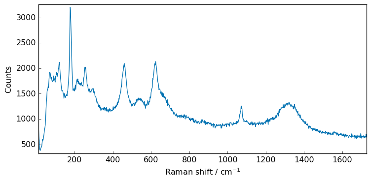
To have a better view of the filters effect, we will zoom on a smaller region: (0,400) cm\(^{-1}\) and we will add some additional noise.
[4]:
# select a region by slicing (note the original shape is (1, 1024)
Xs = X[:, 0.0:400.0]
info_("shape: ", X.shape)
_ = Xs.plot()
--- Logging error ---
Traceback (most recent call last):
File "/opt/hostedtoolcache/Python/3.10.16/x64/lib/python3.10/logging/__init__.py", line 1100, in emit
msg = self.format(record)
File "/opt/hostedtoolcache/Python/3.10.16/x64/lib/python3.10/logging/__init__.py", line 943, in format
return fmt.format(record)
File "/home/runner/work/spectrochempy/spectrochempy/.venv/lib/python3.10/site-packages/traitlets/config/application.py", line 149, in format
return super().format(record)
File "/opt/hostedtoolcache/Python/3.10.16/x64/lib/python3.10/logging/__init__.py", line 678, in format
record.message = record.getMessage()
File "/opt/hostedtoolcache/Python/3.10.16/x64/lib/python3.10/logging/__init__.py", line 368, in getMessage
msg = msg % self.args
TypeError: not all arguments converted during string formatting
Call stack:
File "/opt/hostedtoolcache/Python/3.10.16/x64/lib/python3.10/runpy.py", line 196, in _run_module_as_main
return _run_code(code, main_globals, None,
File "/opt/hostedtoolcache/Python/3.10.16/x64/lib/python3.10/runpy.py", line 86, in _run_code
exec(code, run_globals)
File "/home/runner/work/spectrochempy/spectrochempy/.venv/lib/python3.10/site-packages/ipykernel_launcher.py", line 18, in <module>
app.launch_new_instance()
File "/home/runner/work/spectrochempy/spectrochempy/.venv/lib/python3.10/site-packages/traitlets/config/application.py", line 1075, in launch_instance
app.start()
File "/home/runner/work/spectrochempy/spectrochempy/.venv/lib/python3.10/site-packages/ipykernel/kernelapp.py", line 739, in start
self.io_loop.start()
File "/home/runner/work/spectrochempy/spectrochempy/.venv/lib/python3.10/site-packages/tornado/platform/asyncio.py", line 205, in start
self.asyncio_loop.run_forever()
File "/opt/hostedtoolcache/Python/3.10.16/x64/lib/python3.10/asyncio/base_events.py", line 603, in run_forever
self._run_once()
File "/opt/hostedtoolcache/Python/3.10.16/x64/lib/python3.10/asyncio/base_events.py", line 1909, in _run_once
handle._run()
File "/opt/hostedtoolcache/Python/3.10.16/x64/lib/python3.10/asyncio/events.py", line 80, in _run
self._context.run(self._callback, *self._args)
File "/home/runner/work/spectrochempy/spectrochempy/.venv/lib/python3.10/site-packages/ipykernel/kernelbase.py", line 545, in dispatch_queue
await self.process_one()
File "/home/runner/work/spectrochempy/spectrochempy/.venv/lib/python3.10/site-packages/ipykernel/kernelbase.py", line 534, in process_one
await dispatch(*args)
File "/home/runner/work/spectrochempy/spectrochempy/.venv/lib/python3.10/site-packages/ipykernel/kernelbase.py", line 437, in dispatch_shell
await result
File "/home/runner/work/spectrochempy/spectrochempy/.venv/lib/python3.10/site-packages/ipykernel/ipkernel.py", line 362, in execute_request
await super().execute_request(stream, ident, parent)
File "/home/runner/work/spectrochempy/spectrochempy/.venv/lib/python3.10/site-packages/ipykernel/kernelbase.py", line 778, in execute_request
reply_content = await reply_content
File "/home/runner/work/spectrochempy/spectrochempy/.venv/lib/python3.10/site-packages/ipykernel/ipkernel.py", line 449, in do_execute
res = shell.run_cell(
File "/home/runner/work/spectrochempy/spectrochempy/.venv/lib/python3.10/site-packages/ipykernel/zmqshell.py", line 549, in run_cell
return super().run_cell(*args, **kwargs)
File "/home/runner/work/spectrochempy/spectrochempy/.venv/lib/python3.10/site-packages/IPython/core/interactiveshell.py", line 3077, in run_cell
result = self._run_cell(
File "/home/runner/work/spectrochempy/spectrochempy/.venv/lib/python3.10/site-packages/IPython/core/interactiveshell.py", line 3132, in _run_cell
result = runner(coro)
File "/home/runner/work/spectrochempy/spectrochempy/.venv/lib/python3.10/site-packages/IPython/core/async_helpers.py", line 128, in _pseudo_sync_runner
coro.send(None)
File "/home/runner/work/spectrochempy/spectrochempy/.venv/lib/python3.10/site-packages/IPython/core/interactiveshell.py", line 3336, in run_cell_async
has_raised = await self.run_ast_nodes(code_ast.body, cell_name,
File "/home/runner/work/spectrochempy/spectrochempy/.venv/lib/python3.10/site-packages/IPython/core/interactiveshell.py", line 3519, in run_ast_nodes
if await self.run_code(code, result, async_=asy):
File "/home/runner/work/spectrochempy/spectrochempy/.venv/lib/python3.10/site-packages/IPython/core/interactiveshell.py", line 3579, in run_code
exec(code_obj, self.user_global_ns, self.user_ns)
File "/tmp/ipykernel_16712/1201353750.py", line 3, in <module>
info_("shape: ", X.shape)
File "/home/runner/work/spectrochempy/spectrochempy/src/spectrochempy/application/application.py", line 753, in info_
self.log.info(msg, *args, **kwargs)
Message: 'shape: '
Arguments: ((1, 1024),)
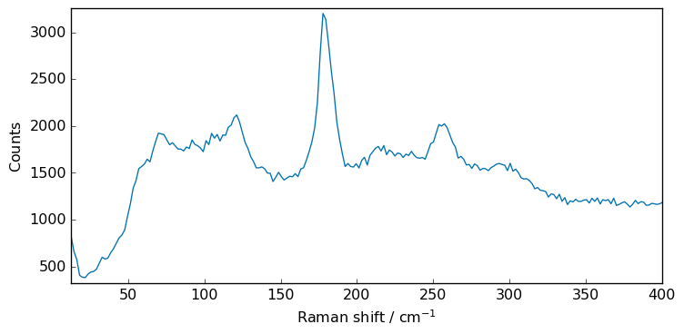
[5]:
import numpy as np
noise = np.random.normal(0, 100, 215)
Xn = Xs + noise
_ = Xn.plot()
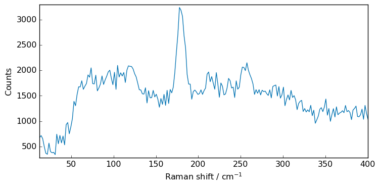
The Filter processor
The Filter processor is a generic processor which can be used to filter 1D and 2D spectra.
Here is a demonstration on how to use it to smooth a 1D spectrum.
Moving average
In its simplest form of smoothing is a unweighted moving average - each absorbance at a given wavenumber of the smoothed spectrum is the average of the absorbance at the absorbance at the considered wavenumber and the N neighboring wavenumbers (i.e. N/2 before and N/2 after), hence the conventional use of an odd number of N+1 points to define the window length. For the points located at both end of the spectra, the extremities of the spectrum are mirrored beyond the initial limits to minimize boundary effects.
Let’s create a filter processor with a moving average (method avg) of 3 points (default size is 5).
[6]:
filter = scp.Filter(method="avg", size=5)
Apply the filter to the spectrum Xn
[7]:
Xsm = filter.transform(Xn)
Note that the above syntax can be simplified to the equivalent:
[8]:
Xsm = filter(Xn)
Now, let’s plot the result.
However, as this will be repeated along the tutorial, we first make a function to plot both original and transformed spectra on the same figure, with a legend.
[9]:
def plot(X, Xm, label=None, xlim=None):
X.plot(color="b", label="original")
ax = Xm.plot(clear=False, color="r", ls="-", lw=1.5, label=label)
diff = X - Xm
s = round(diff.std(dim=-1).values, 2)
ax = diff.plot(clear=False, ls="-", lw=1, label=f"difference (std={s})")
ax.legend(loc="best", fontsize=10)
if xlim is not None:
ax.set_xlim(xlim)
scp.show()
[10]:
plot(Xn, Xsm, label="Moving average (5 points)")
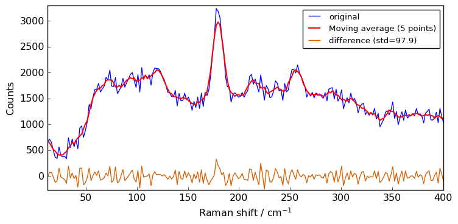
Convolution with window filters
These filters are based on the convolution of scaled window, with the signal. For instance the han convolution method use a han (also known as ‘hanning’) window.
[11]:
filter = scp.Filter(
method="han", size=7
) # can also be one of 'hamming', 'bartlett', # 'blackman'.
Xhan = filter(Xn)
plot(Xn, Xhan, label="Hanning filter (7 points)")
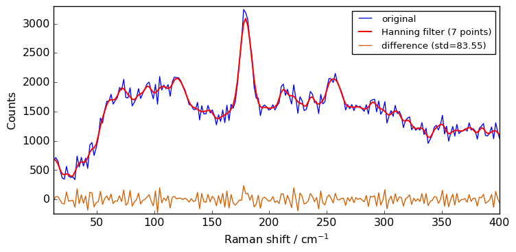
Savitzky-Golay filter
The Filter processor can also be used to apply a Savitzky-Golay filter to the spectrum.
This algorithm uses a polynomial interpolation in the moving window. A demonstrative illustration of the method can be found on the Savitzky-Golay filter entry of Wikipedia.
The function implemented in spectrochempy is a wrapper of the savgol_filter() method from the scipy.signal module to which we refer the interested reader. It not only used to smooth spectra but also to compute their successive derivatives. The latter are treated in the peak-finding tutorial and we will focus here on the smoothing which is the default of the filter (default parameter: deriv=0 ).
As for the previous kernel-based filters, it is a moving-window based method. Hence, the window length (size parameter) plays an equivalent role. Moreover, instead of choosing a window function, the user can choose the order of the polynomial used to fit the window data points (order , default value: 0). The latter must be strictly smaller than the window size (so that the polynomial coefficients can be fully determined).
[12]:
filter = scp.Filter(
method="savgol", size=5, order=0
) # default is size=5, order=2, deriv=0
Xsgs = filter(Xn)
plot(Xn, Xsgs, label="Savitzky-Golay (5 points, order=0)")
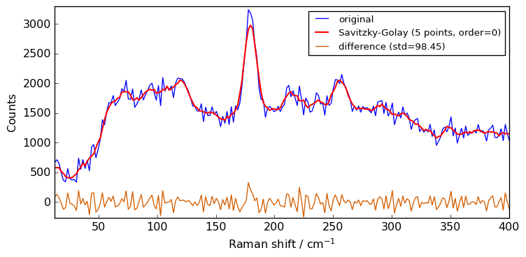
As the order is set to 0, there is no much difference compared to a simple moving average.
Now we can try to increase the polynomial order to 2 to see the effect on the smoothing.
[13]:
filter.order = 2
filter.size = 7
Xsm2 = filter(Xn)
plot(Xn, Xsm2, label="Savitzky-Golay (7 points, order=2)")
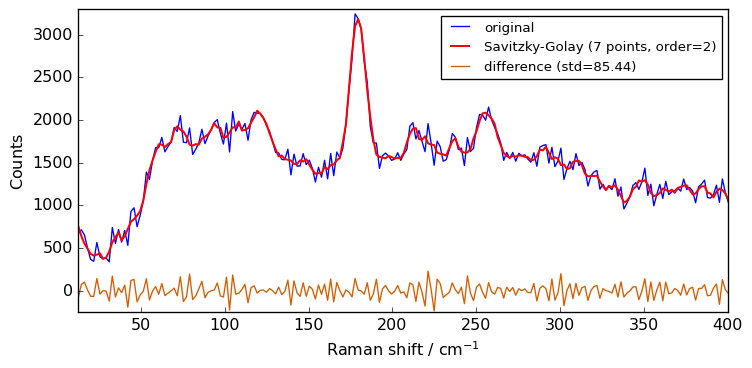
Whittaker-Eilers filter
As good alternative to the Savitzky-Golay filter want can choose to use the Whittaker-Eilers smoother described in: P. H. C. Eilers, “A perfect smoother”, Anal. Chem. 2003, 75, 3631-3636. The implementation in SpectroChemPy is based on the work by H. V. Werts (https://github.com/mhvwerts/whittaker-eilers-smoother). The main parameter to be changed is the lamb (‘λ’ in the Eilers paper), which determines the strength of the smoothing. Note that it may needs tuning over several orders of
magnitude (1, 10, 100, 1000, …).
[14]:
filter = scp.Filter(method="whittaker", order=2, lamb=1.5)
Xwhit = filter(Xn)
plot(Xn, Xwhit, label="Whittaker-Eilers (order=2, lamb=1.5)")
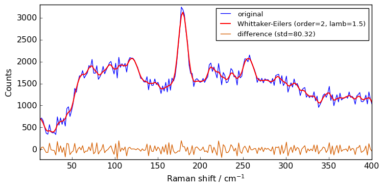
Filtering using API or NDDataset methods.
In addition to the Filter processor which provide an uniform interface to the various filter methods provided by SpectroChemPy, it is also possible (as in previous version of spectrochempy) to use specific NDDataset methods or API functions.
Let’s demonstrate this here.
The smooth method
When simply used as this, i.e. X.smooth() , the method uses a default moving average (‘avg’) of 5 points:
[15]:
Xsm = Xn.smooth() # NDDataset method
Note that it is also possible to use the API function scp.smooth(X) instead of the dataset method X.smooth(). The result is the same.
[16]:
Xsm = scp.smooth(Xn) # SpectroChemPy API function
Window size influence
The following code compares the influence of the window size on the smoothing of the Xn NDDataset.
[17]:
for size in [3, 5, 7, 9, 11]:
Xsm = Xn.smooth(size)
plot(Xn, Xsm, label=f"smooth `avg` size={size}")
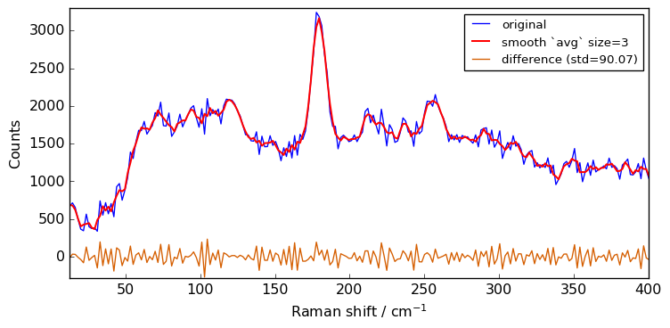
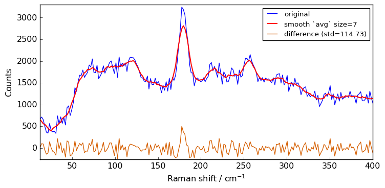
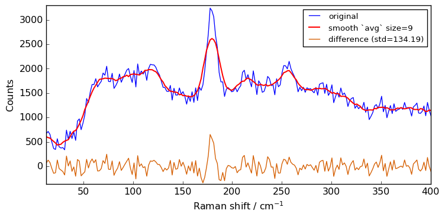
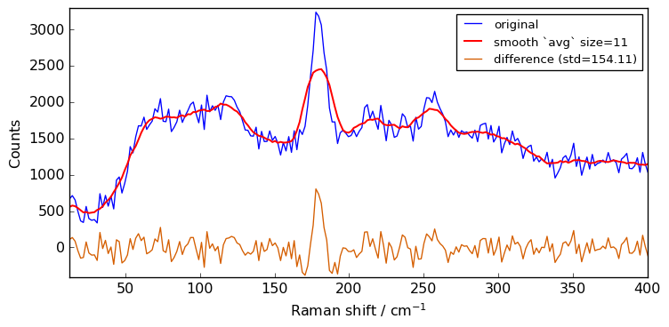
The above spectra clearly show that for large value of the size parameter, the spectrum is flattened out and distorted.
When determining the optimum window size, one should thus consider the balance between noise removal and signal integrity: the larger the window size, the stronger the smoothing, but also the greater the chance to distort the spectrum.
Convolution with windows
Besides the window size, the user can also choose the type of window (window ) from flat(eq. to avg) , han , hamming , bartlett or blackman . The flat window - which is the default shown above - should be fine for the vast majority of cases.
The code below compares the effect of the type of window:
[18]:
size = 7
for window in ["flat", "bartlett", "han", "hamming", "blackman"]:
Xsm = Xn.smooth(size=size, window=window)
plot(Xn, Xsm, label=f"window=`{window}` size={size}")
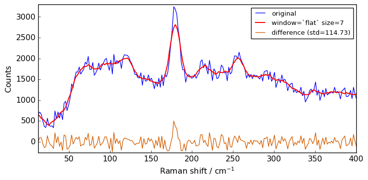
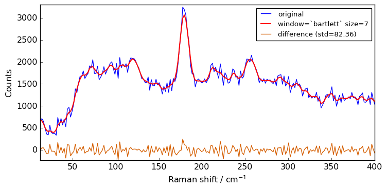
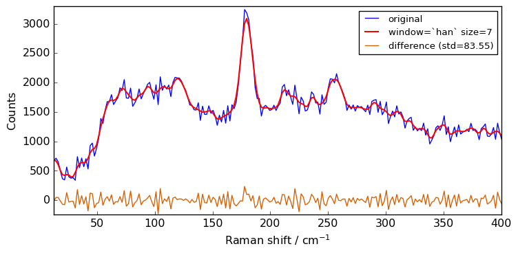
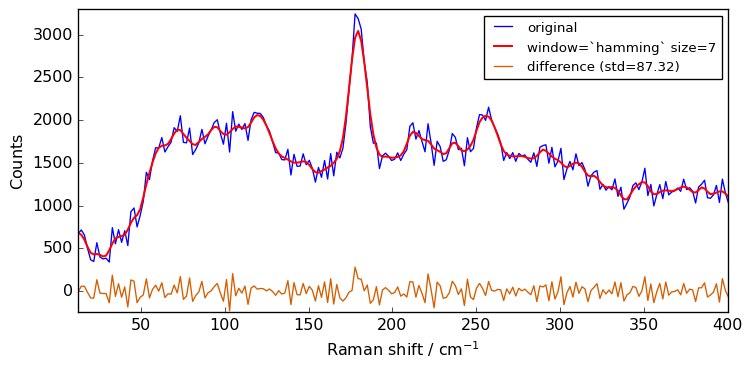
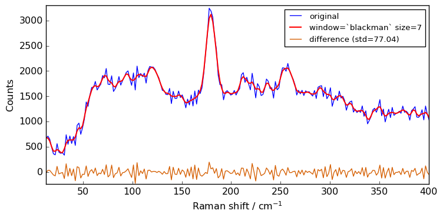
Close examination of the spectra shows that the flat window leads to the stronger smoothing. This is because the other window functions are used as weighting functions for the N+1 points, with the largest weight on the central point and smaller weights for external points.
The window functions as used in SpectroChemPy are derived from the scipy library. These builtin functions are such that the value of the central point is 1. Hence, as shown below, they are normalized to the sum of weights. The code below displays the corresponding normalized functions for size=27 points:
[19]:
import numpy as np
import scipy
functions = []
labels = []
size = 27
for i, method in enumerate(["bartlett", "han", "hamming", "blackman"]):
data = scipy.signal.get_window(method, size, fftbins=False)
data = data / np.sum(data)
s = scp.NDDataset(
data + 0.02 * i
) # normalized window function, y shifted : +0.1 for each function
functions.append(s)
labels.append(f"function: {method}")
ax = scp.plot_multiple(
figsize=(8, 5), # ylim=(0,0.1),
method="pen",
datasets=functions,
labels=labels,
ls="-",
lw=2,
)
_ = ax.legend(labels, loc="upper left", fontsize=10)
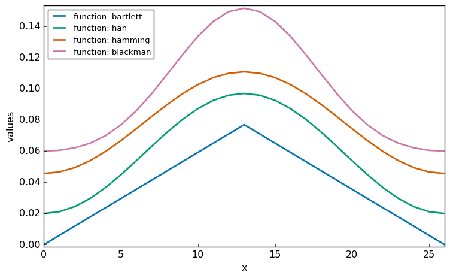
As shown above, the “bartlett” function is equivalent to a triangular window, while other functions (hanning , hamming , blackman ) are bell-shaped. More information on window functions can be found here.
Savitzky-Golay filter:savgol
Similarly, the Savitsky-Golay filter is also implemented as an API/NDDataset method:
[20]:
Xsg = scp.savgol(Xn, size=5, order=2, mode="mirror")
Whittaker-eilers filter : whittaker
Finally, we can also use the whittaker filter directly. e.g.:
[21]:
Xw = scp.whittaker(Xn, lamb=10)